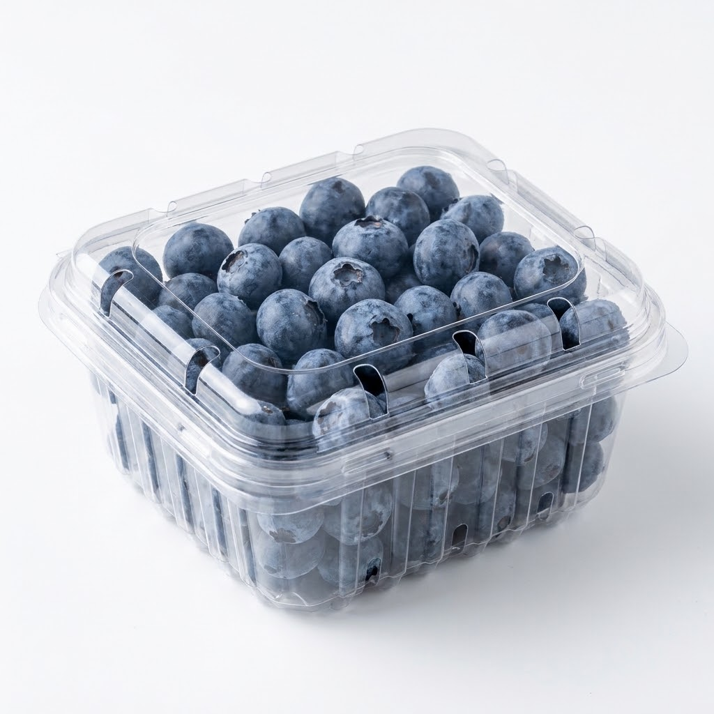
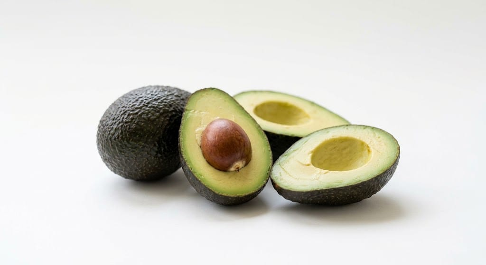
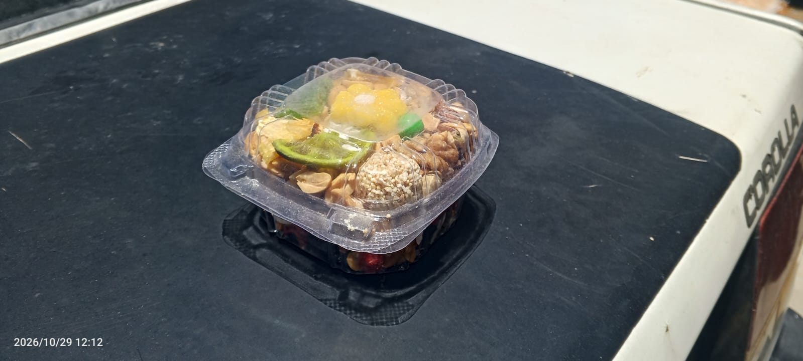
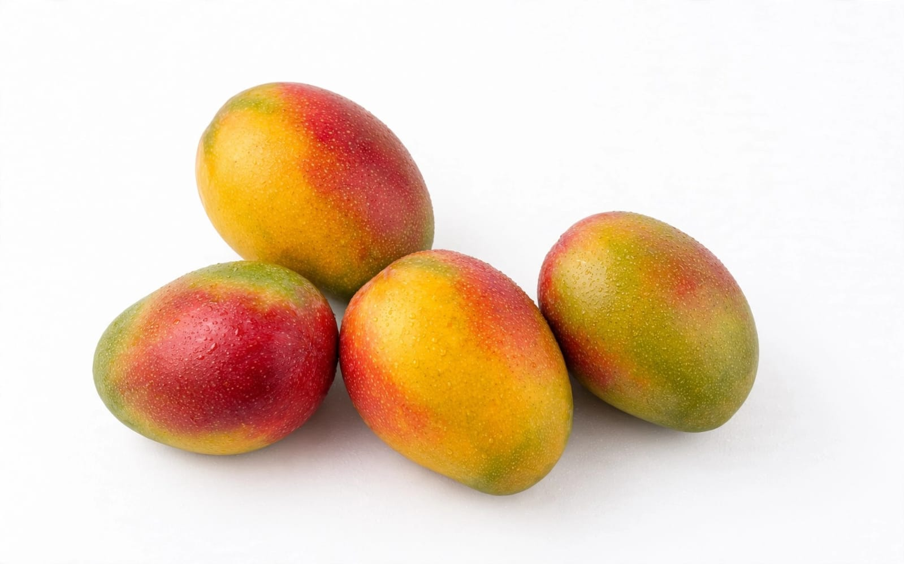

Arándanos 🔵
Los arándanos son pequeñas bayas redondas que crecen en arbustos. Son mundialmente reconocidos como un "superalimento" debido a su extraordinaria densidad nutricional.
ComprarEstos alimentos son un equipo perfecto de comida real que comparte el propósito de cuidar tu bienestar de forma natural. Ya sea con la energía de los frutos secos, las vitaminas del mango, las grasas buenas de la palta o los potentes antioxidantes de los arándanos, todos se unen para proteger el corazón, mejorar la digestión y fortalecer tus defensas en cada bocado.

Los arándanos son pequeñas bayas redondas que crecen en arbustos. Son mundialmente reconocidos como un "superalimento" debido a su extraordinaria densidad nutricional.
Comprar
A diferencia de la gran mayoría de las frutas frescas, la palta destaca porque su componente principal son las grasas saludables, otorgándole una textura cremosa.
Comprar
Su bajo nivel de humedad es propio de su naturaleza o por deshidratación y aportan gran energía.
Comprar
El mango es una fruta tropical jugosa. Se le conoce popularmente como el "rey de las frutas" debido a su sabor dulce, refrescante y pulpa carnosa.
Comprar